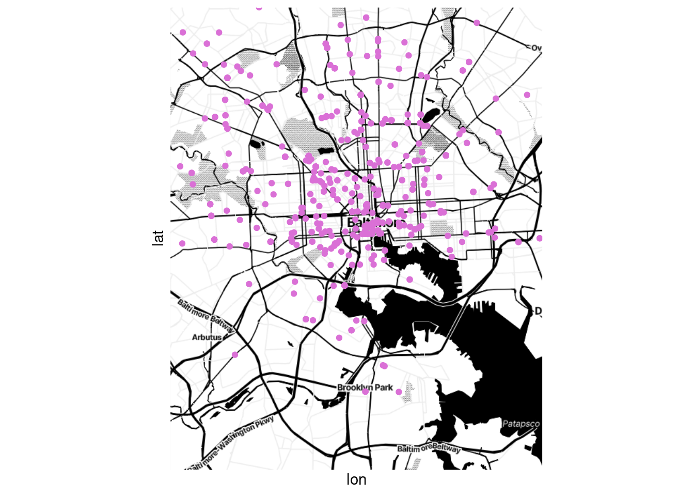
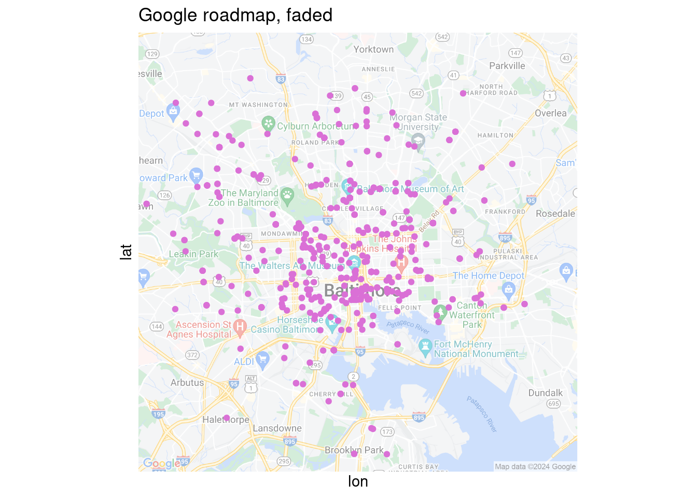
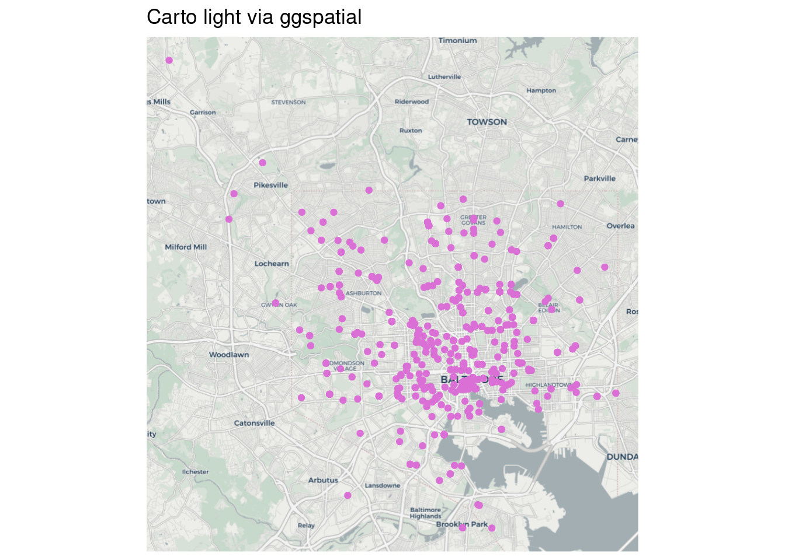
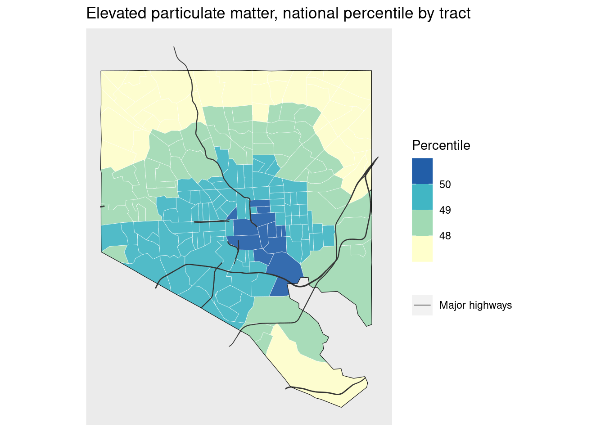

16. Putting spatial data in context
Warm up
Sketch a map of a place you’re familiar with. Mark off locations associated with something secret, or that people might want privacy around, or that are in some way stigmatized, things that even if people know the location is there they might not want their activity publicized. You don’t have to identify anything. For example, the places you used to go when you cut school as a teenager, places you know people sell or use drugs, methadone clinics.
There are lots of ways to provide context for the data in your maps; we’ll only look at a few.
TODO: How to get an API key
Basemaps
Put your map on a map. There are lots of options; Google Maps and OpenStreetMap are both very popular for map tiles, but they contain a lot of colors and symbols. For data visualization, simple grayscale or black & white basemaps work well, like the map tiles from Stamen (now distributed through Stadia) and Carto. These often require an API key. 1
1 One thing to note with the ggmap package is that several of the providers have gone out of business since the package was first released, and the functions for them haven’t all been removed. Don’t be surprised if you get errors downloading map tiles from one provider—just try another one. There are also a few other packages to download basemaps but none are updated often.
To get map tiles, you’ll need either coordinates for the center of the map and a zoom level (e.g. for Google maps), or a bounding box (e.g. for Stamen/Stadia).
balt_tracts <- tracts_sf |>
filter(county == "Baltimore city")
balt_merge <- st_union(balt_tracts)
# center coordinates need to be a vector of two values
balt_centroid <- st_centroid(balt_merge) |>
st_coordinates()
# bbox needs to be a vector of left, bottom, right, top with those names
balt_bbox <- st_bbox(balt_merge) |>
setNames(c("left", "bottom", "right", "top"))
# google_road <- get_map(location = balt_centroid,
# source = "google",
# zoom = 12,
# maptype = "roadmap") # see other options
# google_sat <- get_map(location = balt_centroid,
# source = "google",
# zoom = 12,
# maptype = "satellite")
stamen_toner <- get_map(location = balt_bbox,
source = "stadia",
maptype = "stamen_toner")
stamen_bg <- get_map(location = balt_bbox,
source = "stadia",
maptype = "stamen_toner_background")
stamen_lite <- get_map(location = balt_bbox,
source = "stadia",
maptype = "stamen_toner_lite")# need to set inherit.aes = FALSE for all geom_sf layers
# otherwise they'll try to inherit the aesthetics of the basemap
# ggmap(google_road) +
# geom_sf(data = art_sf, inherit.aes = FALSE, color = "orchid") +
# labs("Google roadmap, hard to read") +
# coord_sf(ndiscr = 0)
#
# # why is this still called darken if you can use any color?
# ggmap(google_road, darken = c(0.5, "white")) +
# geom_sf(data = art_sf, inherit.aes = FALSE, color = "orchid") +
# labs("Google roadmap, faded") +
# coord_sf(ndiscr = 0)
#
# ggmap(google_sat) +
# geom_sf(data = art_sf, inherit.aes = FALSE, color = "orchid") +
# labs("Google satellite") +
# coord_sf(ndiscr = 0)
ggmap(stamen_toner) +
geom_sf(data = art_sf, inherit.aes = FALSE, color = "orchid") +
labs("Stamen toner") +
coord_sf(ndiscr = 0)
ggmap(stamen_bg) +
geom_sf(data = art_sf, inherit.aes = FALSE, color = "orchid") +
labs("Stamen toner background") +
coord_sf(ndiscr = 0)
ggmap(stamen_lite) +
geom_sf(data = art_sf, inherit.aes = FALSE, color = "orchid") +
labs("Stamen toner lite") +
coord_sf(ndiscr = 0)
There are also OSM tiles in ggspatial with a few styles, but they require the raster package where the sf ecosystem is moving toward terra and seem to rely on deprecated functions from other packages. I don’t love it…
library(prettymapr) # not using but needed for ggspatial
ggplot(art_sf) +
ggspatial::annotation_map_tile(zoom = 12, progress = "none", type = "cartolight") +
geom_sf(color = "orchid") +
labs(title = "Carto light via ggspatial") +
coord_sf(ndiscr = 0)
My personal favorite is Stamen toner background (no text labels) with the darken argument to fade the color to gray.
You can also get specific types of data from OpenStreetMap and use them to create the background yourself with ggplot—we probably won’t have time to get into this but it lets you do something comparable to what in web mapping would be vector tiles.
Other locations
Put other stuff on your map. If there are specific locations that provide important context, you might try adding a few essential ones (don’t overdo it). Same goes for regional boundaries, major roads, landmarks to help your reading orient themself, buffers around a location, etc. A few examples I’ve done:
- Using dashed lines to mark an area used in some analyses as a proxy for the focus region
- Using points to mark locations of jails and prisons for a map about tracts incarcerated people come from
- Overlaying lines of major highways (I’m not a huge fan of this if the data isn’t related to highways, but people ask for it sometimes)
- Layering a dot density map of population today by race over historic redlining maps
waste_sf <- balt_tracts |>
left_join(ej_natl, by = c("geoid" = "tract")) |>
filter(indicator == "haz_waste")
# filter by geometry to only get brownfields in city
balt_brownfields <- brownfields_sf |>
st_transform(st_crs(balt_tracts)) |>
st_filter(balt_merge) |>
filter(!is_archived)
ggplot(waste_sf) +
geom_sf(aes(fill = value_ptile), color = "white", linewidth = 0.1, alpha = 0.9) +
# force a legend
geom_sf(aes(shape = "Brownfield"), data = balt_brownfields, size = 2, alpha = 0.9) +
geom_sf(data = balt_merge, color = "black", linewidth = 0.2, fill = NA) +
scale_fill_fermenter(palette = "YlGnBu", direction = 1) +
coord_sf(ndiscr = 0) +
labs(title = "Proximity to hazardous waste treatment, national percentile by tract",
fill = "Percentile", shape = NULL) +
guides(fill = guide_colorbar(order = 0))
air_sf <- balt_tracts |>
left_join(ej_natl, by = c("geoid" = "tract")) |>
filter(indicator == "pm25")
balt_highways <- highways_sf |>
st_transform(st_crs(balt_tracts)) |>
st_filter(balt_merge)
ggplot(air_sf) +
geom_sf(aes(fill = value_ptile), color = "white", linewidth = 0.1, alpha = 0.9) +
# force a legend
geom_sf(aes(color = "Major highways"), data = balt_highways, linewidth = 0.3) +
geom_sf(data = balt_merge, color = "black", linewidth = 0.2, fill = NA) +
scale_fill_fermenter(palette = "YlGnBu", direction = 1) +
scale_color_manual(values = c("gray20")) +
coord_sf(ndiscr = 0) +
labs(title = "Elevated particulate matter, national percentile by tract",
fill = "Percentile", color = NULL) +
guides(fill = guide_colorbar(order = 0))
Things that aren’t data
Tell a story outside of your map. Pair the map with text, photos, or other media that provide context and history. Story maps can do this well, and many news outlets run maps in their articles that help you use a map to understand the text and vice versa.
Bottom line
For a complex analysis or history, a map is often not enough. Practice writing about your data and maps, or collaborate with people who do this well.